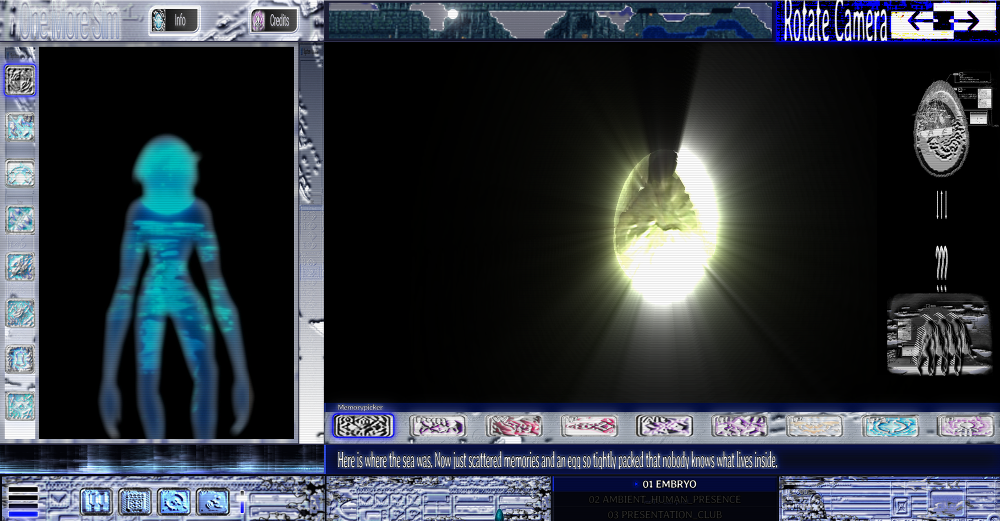
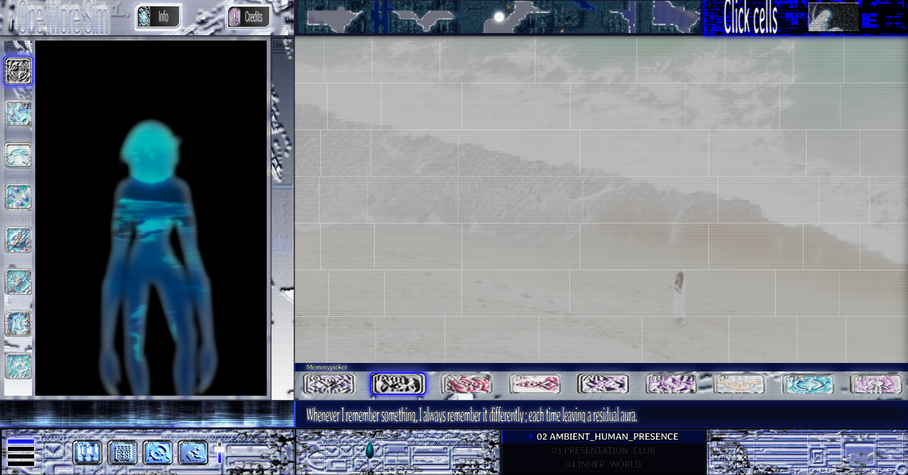
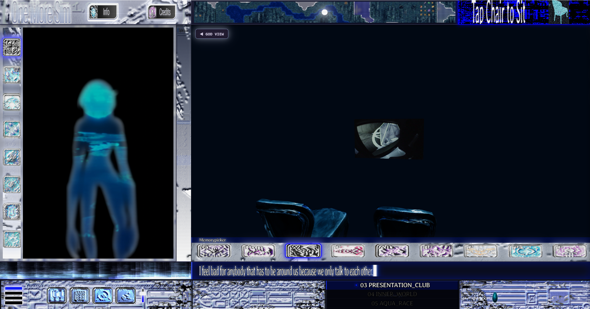
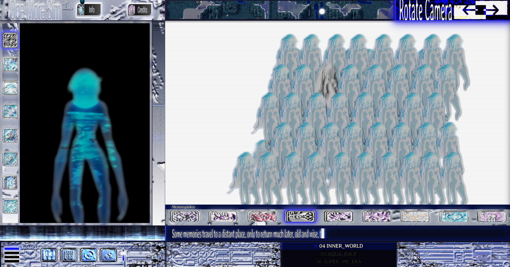
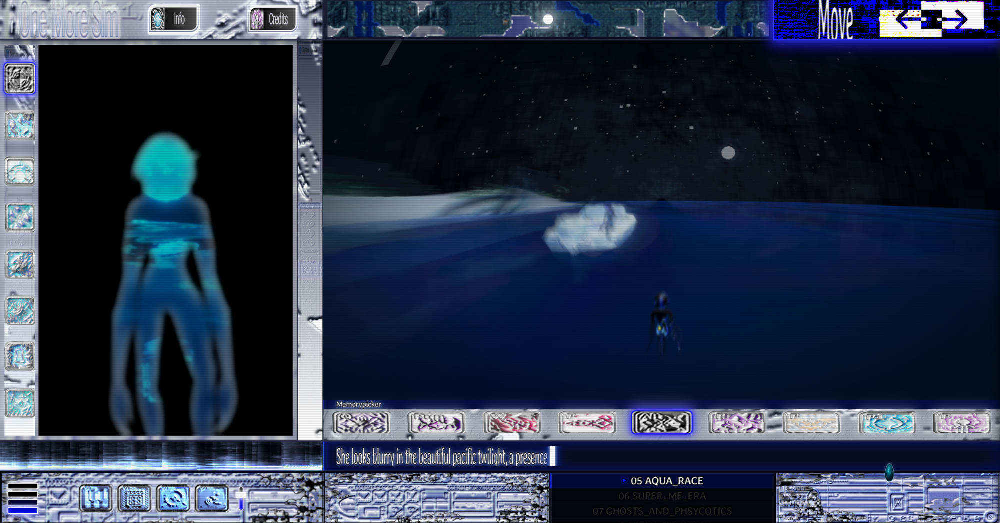
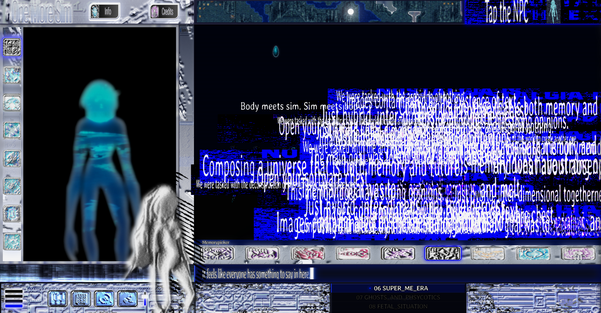
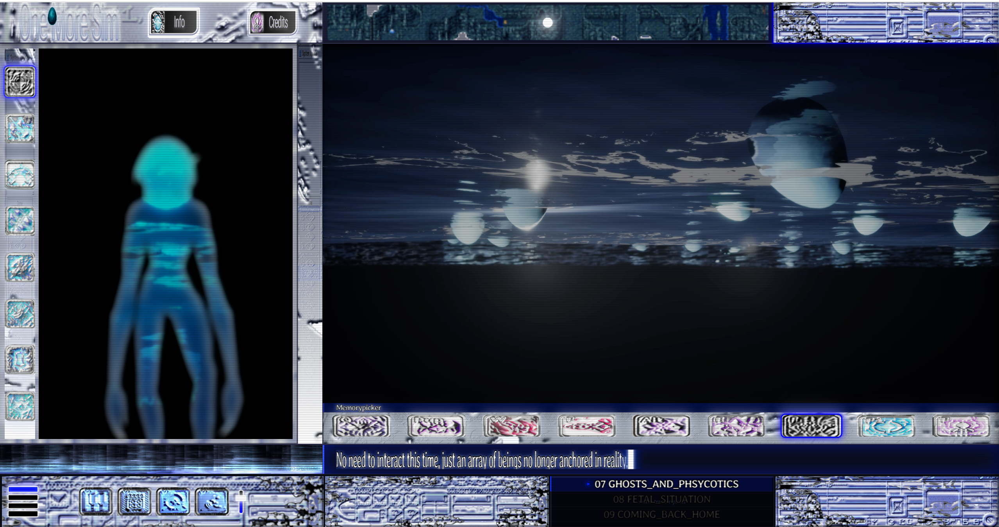
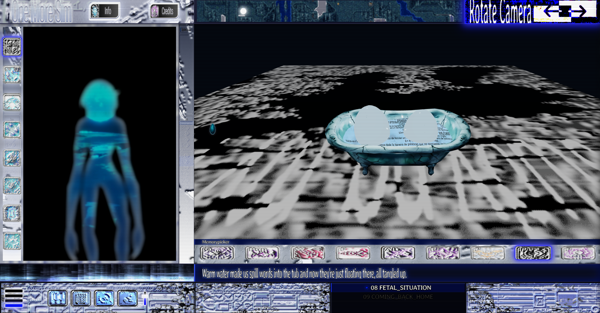
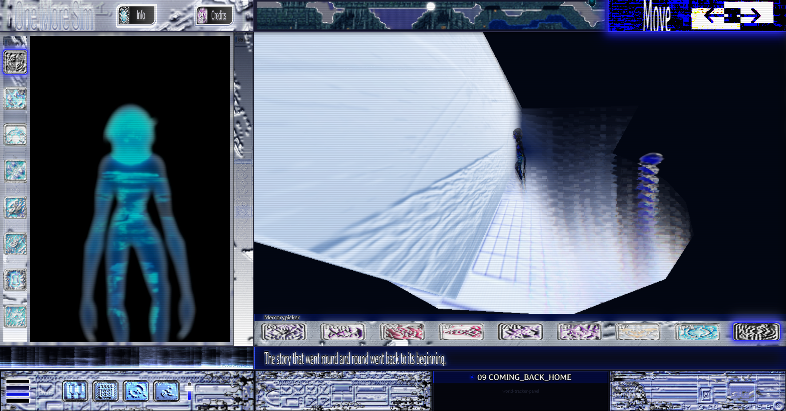

One More Sim

Text by Joaquina Salgado accompanying One More Sim, commissioned for Vienna Digital Cultures 2026.
Like a simulation, a memory is always unclear, its limits bleeding into everything else. It has agency of its own, and we are left as spectators of its whims. If a memory were granted a body, what would it do? Would it follow its dreams and live its life to the fullest?
What runs here is a protocol of intimacy of the image. As if images were using memory as a medium to reach out to us, each one with its own rules, its own way of relating to us. To approach memory now is to approach our relationship with the image itself.
Memories need to rest somewhere. Mine rest 11,892 kilometers from here, on the surface of a family computer that has been hibernating for years. I find in that machine the objectual dimension of memories. The one that condenses into a smell and a specific weight, a dense file that decompresses through the object.
Then there is another dimension. The memory that has rendered itself as image, abandoning its objectual home and turning into an instance with its own logic. To think about images is to think about their inner world, and to enter that inner world is to give memory a body, a plasticity it didn't have before.
Imagine a memory simulator, where entering each world is like stepping into the mind of a new lover: the boundary-bending togetherness that is a raw encounter with another soul. Every world is independent and interconnected at the same time, an architecture of agentic structures where memories hold each other, with no regard for human time.
Collective memories are distributed at a greater speed off the screen. These mediated simulations, the ones we attend to daily, are what make our relationship with the past shift constantly. What follows are nine fragments living in those blurry, porous edges where memories become simulations, each one corresponding to an inner world inside One More Sim, the web-based simulator that runs alongside this text. We can only enter these worlds as visitors.
01_Embryo
This memory is the entry point. A medium not bound to an obligation to represent the real. It carries the idea that every memory exists only because there was a sea before. An immense amount of matter progressively scattering and folding into different forms.
In this first world, I find the entry to everything else. It is the feeling of beginning. And at the same time, a fragility that only exists because it has a long story behind it. Somehow this is the first memory, that kind of blurry experience you know existed,, but that leaves no material evidence.
There is something to admire in what is fully contained. Like the image of the egg, so tightly packed that nobody knows what lives inside. An infrastructure that holds all systems together, the core unit.

02_Ambient_Human_Presence
When I remember something, I always remember it differently. Whatever that memory is, it is always true in my mind. Even knowing there are multiple versions of it.
Each version unfolds into the next, like different runs of the same simulation. Here, the memory itself becomes uncertain, a force to be manipulated. It carries a residual aura. This is memory's inner, private life, speaking to us through layered images.

03_Presentation_Club
Inside an empty room, my inspiration flows. This is the kind of memory that forms when I'm surrounded by so many people that all the attention collapses into a single point.
All these images sharing their time with us, a hybrid togetherness. Close to a multiplayer memory, a shared place where we sit and watch it exist by itself.
"I feel bad for anybody that has to be around us because we only talk to each other."

04_InnerWorld
(heyy image, you look trapped there)
Some memories travel to a very distant place, only to return much later, old and wise, to share what they have seen. When this vision finally makes it out of its shell, there is usually an incoherent piece of narrative. I can't blame the memory, being static for so long must get boring.
This is the kind of memory that has a notion of time in flux. A complex and problematic attitude towards the real. When it is ready to come back and show all its layers, everything it has been hiding in its confines. A blurry return I discovered by rotating it through different angles, where all its flatness showed. Multiple skin layers peeling away from each other.

05_AquaRace_
Everything gets blurry in the beautiful pacific twilight. The real has become something to be played with, questioned, and ultimately mistrusted. Even the romance turns into a kind of terror. This is the kind of dream memory I try to chase but can never quite reach. I don't really know anyone there, because it is only me, chasing that delusional feeling; an ambivalent attitude towards what it is to be human in relation to the machine. It only leaves trails.
I don't want to chase this feeling forever; I think it might happen anyway.

06_Super_me_era
This memory has strong opinions. Even when my rational self is holding the situation together, there she comes again. This is the intrusive side of a memory. It rises from the back of the head before I even ask for it. The kind I wish wasn't there. An array of NPCs in a transitional space, each one with something to say. Different voices from the same source, interpolating into each other. The image that imposes its own insane visions on outer worlds of reality. The one I was not looking for.
It feels like everyone has something to say in here.
Composing a universe that is both memory and future.
And what about absence?
We were tasked with the archiving of nothing.
The main goal was to f̷̛̃̾̾̾͝ ̸̢̛̇ ̷̢͜͝ l̷̛̃̾̾̾͝ ̸̢̛̇ ̷̷̢̛̃̾̾̾͜͝͝ ̸̢̛̇ ̷̢͜͝ ̷̛̃̾̾̾͝ ̸̢̛̇ ̷̷̢̛̃̾̾̾͜͝͝ ̸̢̛̇ ̷̢͜͝ ̷̛̃̾̾̾͝ ̸̢̛̇ ̷̢͜͝ and then melt.
Just hybrid, inter-dimensional togetherness.
We were tasked with the deconstruction of this world to create another one.
Body meets sim. Sim meets body.
Images contaminated by the existence of text.
Open your software chest.

07_Ghosts_and_Psychotics
Where is the sea in this cybernetic world? This is the kind of memory where we can see another vision of beings who, like ghosts and psychotics, are no longer anchored in reality and instead wander through a hallucinatory world where the material real is lost forever. (The water as the medium that transports/holds this reality/ambiguity.)
This image shows the return of the egg stage, and it's presented just before the fetal situation. The array of NPCs turned out to be just an array of eggs floating upside down. This time there is no need to interact. It is only a memory that recalls some contemplation. The memory that does not want to be touched.

08_Fetal_Situation
This is another shared memory. In this one,I am in the centre of everything with you. Warm water made us spill words into the tub, and now they're just floating there, all tangled up. This memory is a haunted medium, where there were once whole human subjects and now only fragmented and decentered subjectivities, metaphors.
How did we stray so far? At some point, as you might notice, I get tired of talking and translating in my mind. This is the kind of thing that happens in a fetal situation. The tub is a maternal entity whose fluids embrace something pre-verbal, containing this aquatic status and the sense of numbness.

09_Coming_back_home
The story that went round and round went back to its beginning. This is the loop between coming back home and the egg moment. After all the memories are collected, lovers met, opinions gathered; I let the back of my head do its job. A movement made by reflex, going in the direction of home. Picking flowers on the way, picking bubbles, picking small shells. This is the kind of adrenalised dreamscape memory that reminds me how to return; walking back to all the homes I've been to.
That feeling of non-accomplishment, terminal identity, a new state where we find both the end of the subject and a new subjectivity constructed at the computer screen.
The story that went round and round went back to its beginning. This is the loop between coming back home and the egg moment. After all the memories are collected, lovers met, opinions gathered; I let the back of my head do its job. A movement made by reflex, going in the direction of home. Picking flowers on the way, picking bubbles, picking small shells. This is the kind of adrenalised dreamscape memory that reminds me how to return; walking back to all the homes I've been to.
That feeling of non-accomplishment, terminal identity, a new state where we find both the end of the subject and a new subjectivity constructed at the computer screen.
